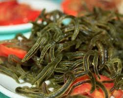

Pokpoklo

Ingredients
- ¼ lb. lato or sea grapes, rinsed
- 1 large plum tomato cored and diced
- 1 medium red onion minced
- ¼ cup white vinegar
- 1/8 teaspoon ground black pepper
- ¼ teaspoon salt
- ¼ teaspoon granulated white sugar
Instructions
- In a bowl, combine vinegar, salt, pepper, sugar, tomato, and onion. Stir to mix.
- Add the lato or sea grapes. Toss. Let it stay for at last 10 minutes.
- Transfer to a serving bowl. Serve.